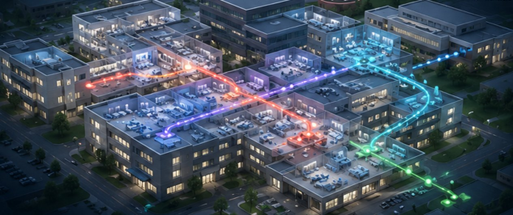

High Fidelity Digital TwinsPredict Hospital Performance Before Decisions Are Made
HealthSimAI uses AI-powered digital twins to help health systems optimize patient flow, staffing, capacity, and operational performance before changes impact patients or staff.
One live view of your systems, data, and KPIs.
HealthSimAI delivers a powerful operational view that lets your teams simulate the impact of changes before they act — and track real-time performance across every department as it happens.
Hospital Campus Digital Twin
Real-time simulation of your hospital operations
- ED Patients
- Inpatients
- Discharges
- Transfers

patients
patients
patients
patients
patients
Simulate changes. Predict outcomes. Make better decisions based on national trends.
Model your own facility →A lifecycle digital twin that helps health systems design, activate, operate, and optimize hospitals, from the first blueprint through daily operations and continuous improvement.
of Your Hospital
Testing
Predictions
Decisions
Outcomes
Healthcare Leaders Face Complex Decisions With High Stakes
Rising demand, constrained resources, and operational complexity make it difficult to predict the impact of decisions in a live environment.
ED Overcrowding
Longer waits and patient dissatisfaction
▲ Rising nationallyCapacity Constraints
Bed shortages and bottlenecks
▲ WorseningStaffing Challenges
Labor shortages and burnout
▲ Persistent shortageInefficient Utilization
Underutilized ORs and resources
◉ WidespreadFinancial Pressure
Margin erosion and rising costs
▲ Tightening marginsDirectional industry trends; source figures available on request.
Your hospital, virtually replicated.
HealthSimAI creates a living digital twin of your hospital operations, enabling leaders to test changes, forecast impacts, and optimize performance before taking action.
Your simulation is only as good as the data feeding it.
Your twin runs on live, validated feeds from your EHR, RTLS, and building systems. Reliable, real-time data is what turns a model into decisions you can trust.
Your Data
Digital Twin
Scenarios
Outcomes
Decisions
The 4 V's of Data
| The 4 V's | What It Means | Why It Matters |
|---|---|---|
| Volume | The sheer scale and amount of data generated and stored by the business. | Provides the massive sample size required to train accurate predictive models, identify hidden trends, and scale operations. |
| Velocity | The speed at which new data is generated, processed, and analyzed. | Enables real-time decision-making, allowing companies to react instantly to market shifts, supply chain hiccups, or customer behaviors. |
| Variety | The different forms data takes (structured like spreadsheets; unstructured like emails, video, or social media). | Creates a holistic, 360-degree view of the business by combining diverse insights from every possible customer and operational touchpoint. |
| Veracity | The quality, accuracy, and trustworthiness of the data being collected. | Ensures confident, reliable strategy. High veracity means the data can be trusted to drive critical business changes without risk of error. |
Digital Twins That Deliver Multiple Value Streams
Every department twin does double duty — one living model that both runs your operations and trains your people.
Operations Optimization
Through systems engineering: test layouts, staffing, and capacity decisions in the twin before anything changes on the floor.
Clinical Training
For key personnel: surgical teams, triage, and critical-event response rehearse inside the twin of their own department.
4 Focus Areas That Matter for Your Hospital
- Surgical workflow optimization
- Instrument & staff choreography
- Pre-op / post-op process simulation
- Surgical team training scenarios
- Triage protocol simulation
- Mass casualty event rehearsal
- Staff surge capacity modeling
- Throughput & boarding analysis
- Patient acuity & staffing ratios
- Ventilator & device integration
- Critical event response training
- ICU bed & flow optimization
- Specialty unit configuration
- Nurse call & response modeling
- Medication administration flow
- Discharge planning simulation
Estimate How Much HealthSimAI Could Save You Annually
Model the potential annual impact of a hospital digital twin on your facility.
▲ Drag the three sliders to match your facility — the estimate updates in real time.
Illustrative modeling based on industry benchmarks. Your detailed assessment is built from your own operational data.
Drive Measurable Results Across Your Health System
Improve Patient Flow
Reduce wait times and improve throughput
Optimize Staffing
Right staff, right time, right place
Maximize Capacity
Improve bed, OR and resource utilization
Strengthen Financial Performance
Reduce costs and improve margins
Mitigate Risk
Anticipate issues and build operational resilience
Enhance Patient & Staff Experience
Better care. Happier teams.
Proven Expertise.
New Impact.
HealthSimAI brings more than 30 years of experience delivering digital twin and simulation solutions in the world's most complex, mission-critical environments, now focused on transforming healthcare operations.
Read our perspectives →Proven Digital Twin Leadership
30+ years building large-scale digital twins and simulations — from defense and aerospace to enterprise operations.
Mission-Critical Pedigree
Trusted by the U.S. military and federal agencies; our search-and-rescue (SARSAT) heritage is credited with 50,000+ lives saved.
Healthcare Focused
Purpose-built for hospital operations, clinical workflow, and health-system performance — not a generic analytics tool.
AI-Powered Intelligence
Predictive models and optimization turn live EHR, RTLS, and IoT data into decisions teams can act on.
Early Results. Real Impact.
In early pilot engagements, teams are seeing measurable gains in throughput, wait times, and utilization within the first weeks of going live.
- Reduced ED wait times
- Improved bed throughput
- Better staffing accuracy
- Increased OR utilization
We Know How to Partner
Decades partnering with mission-critical organizations taught us how to integrate, co-design, and deliver. We bring that same discipline to every health-system relationship.
Resources
Knowledge Center
Transform your healthcare operations.
Optimize Your Hospital Today and Save Lives
Let's build a smarter, more resilient healthcare system together.